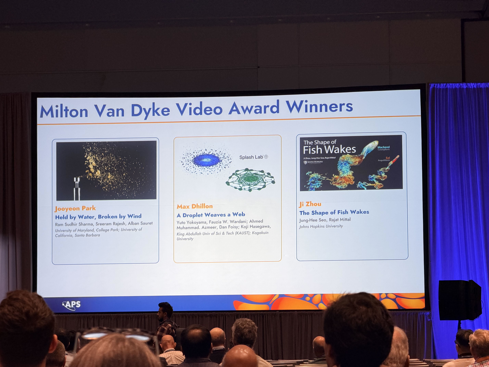
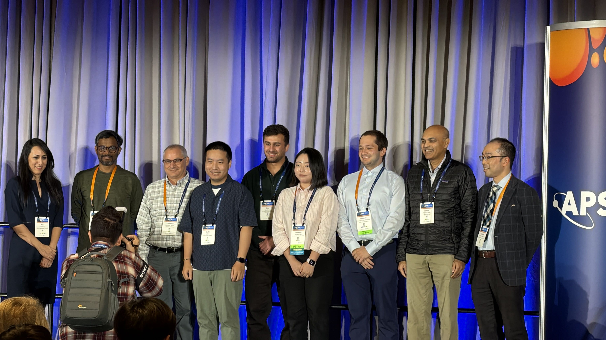

November 2026
Our video, “Held by Water, Broken by Wind,” received the Milton van Dyke Video Award at the Gallery of Fluid Motion, APS DFD 2026. The video visualizes the dislodging and fragmentation dynamics of wet granular aggregates under turbulent jet flows.

